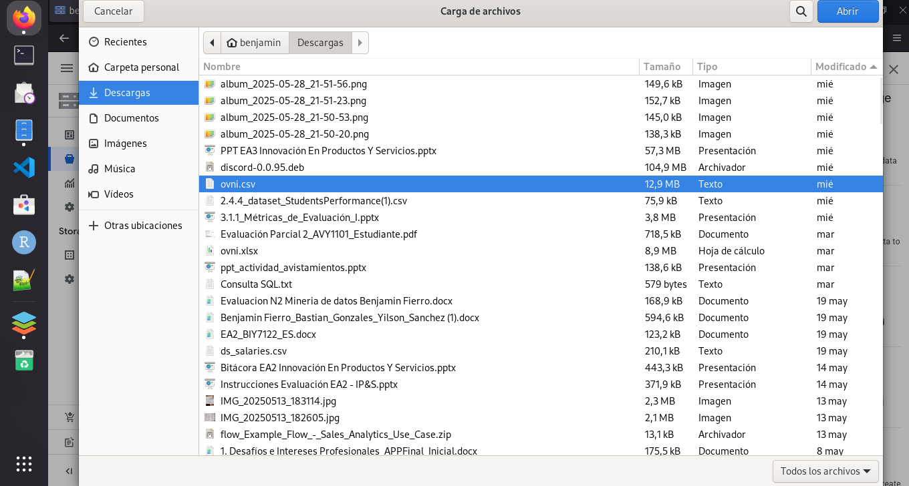
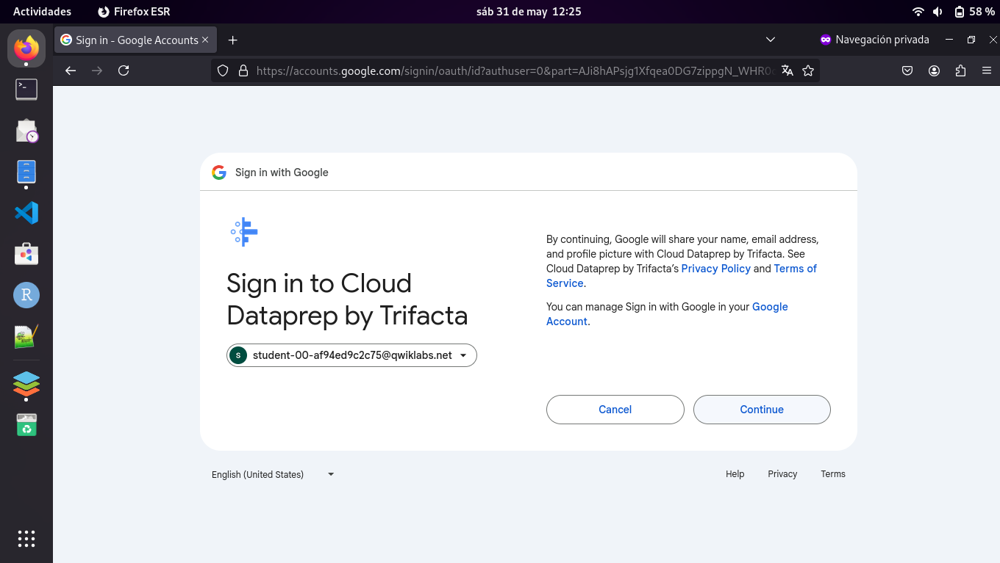
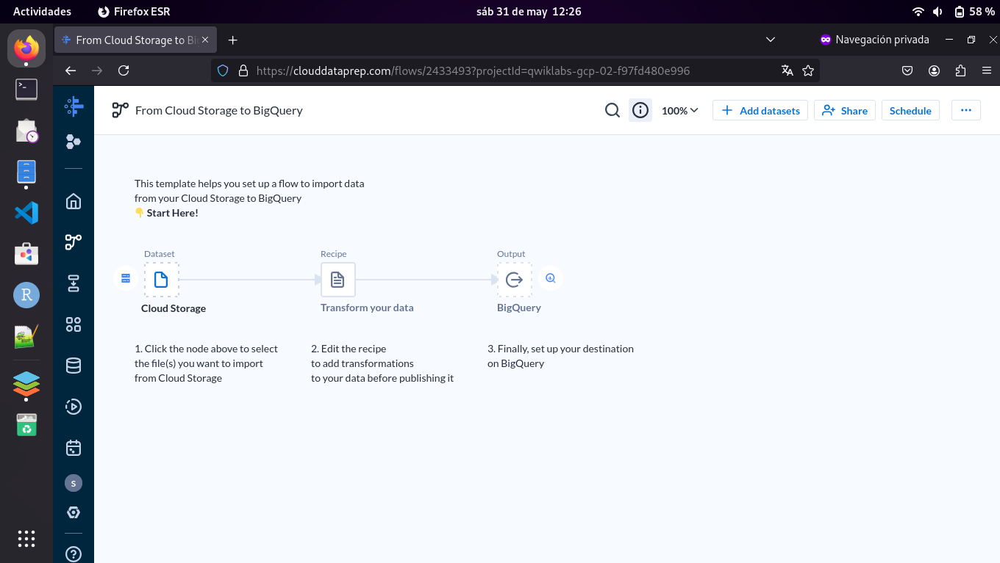
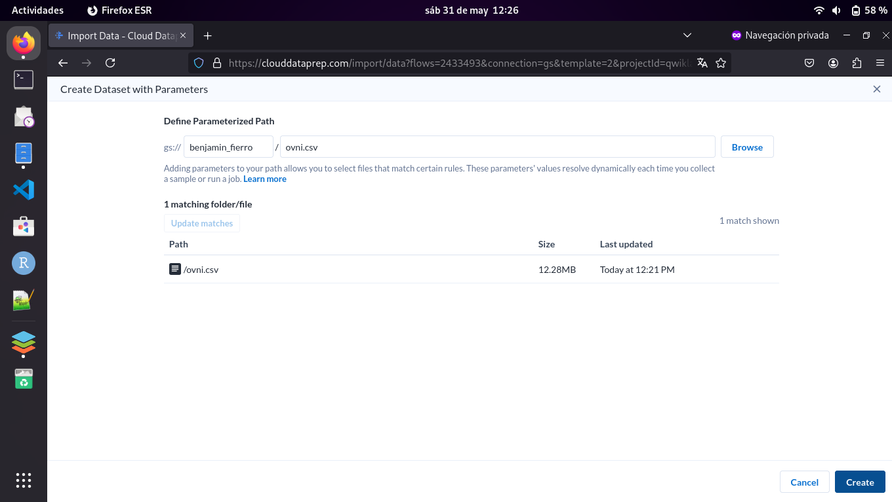
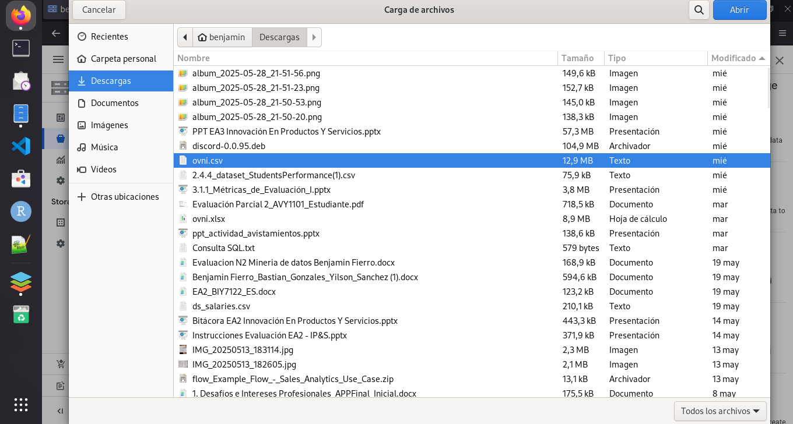
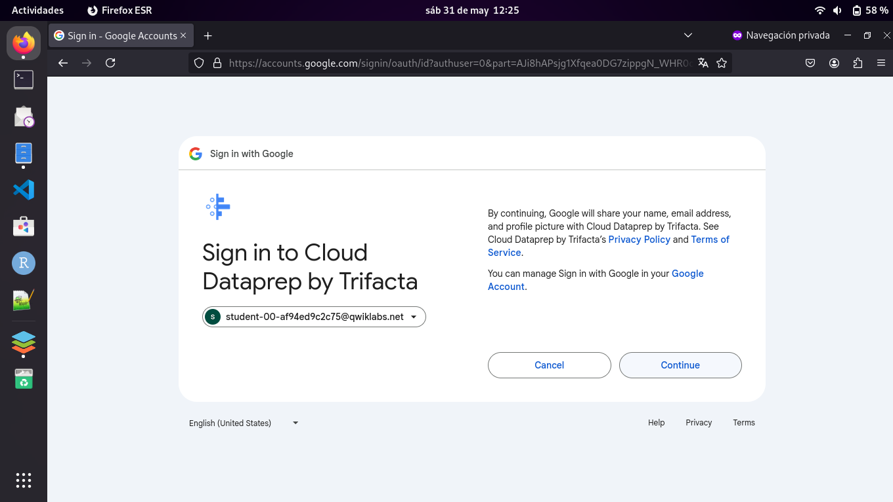
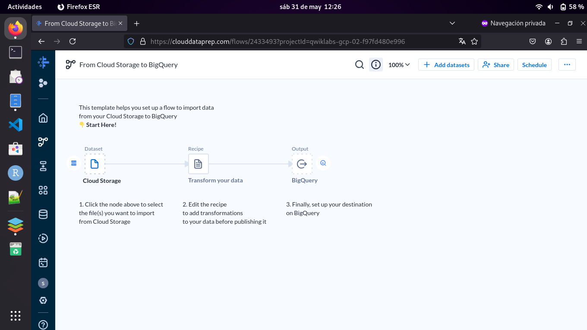
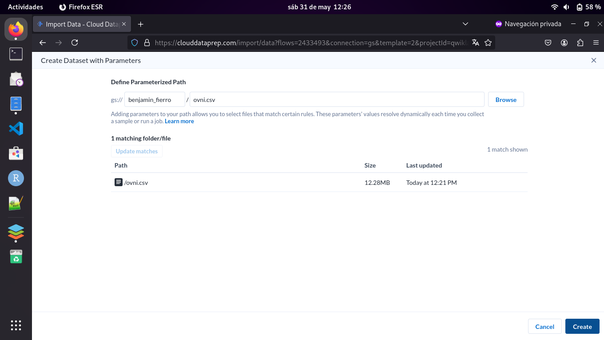

🌌 Avistamientos de OVNIs en Estados Unidos
Este sitio presenta una visualización de datos basada en reportes de objetos voladores no identificados (OVNIs) observados en Estados Unidos. Para poder realizar esta investigacio y graficos se acudio a una base de datos de gran volumen en excel, tambien se utilizo un laboratorio de google llamado:"GSP823" la cual sirvio para crear el bucket y subir el archivo que contiene los datos Ademas se debio utilizar dataprep para verificar y modificar los datos ya existente para asi generar las consultas en SQL y posteriormente la creación de los graficos.
📊 Formas Comunes de OVNI
Las personas pueden descrbir a estos objetos de muchas formas,tamaños y colores como tambien tener el suficiente conocimiento en aeronautica para poder diferenciarlos de otros objetos mas cotidianos Las formas más reportadas por los testigos incluyen luces, esferas, triángulos y discos. El siguiente gráfico presenta el top 5 de las más mencionadas.

📈 Avistamientos por Año
Se muestra la evolución de los reportes a lo largo del tiempo. En determinadas fechas hay picos y alzas que podrían relacionarse con fenómenos culturales o tecnológicos.

🗺️ Top 10 Estados con más Reportes
A lo largo del pais norteamericano se han divisado una gran variedad de objetos voladores que no han sido identificados pero en ciertos estados se da una mayor frecuencia de avistamientos Estos son los estados que más reportes de OVNIS han logrado capturar. ¿Será por su ubicación, clima o simplemente por mayor cobertura mediática?
 






